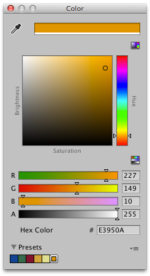

Swatch libraries
Use swatch libraries to reuse, save, and share colors, gradients, and animation curves. You can save and choose swatches in the Color Picker, Gradient Editor, and Curve Editor.

A swatch library is a collection of swatches that you save in a file. The Swatches section displays a single library at a time.
To save a swatch:
- Open the Color Picker, Gradient Editor, or Curve Editor. For example, select Main Camera in the Hierarchy window.
- In the Inspector window, click Background Color.
- In the picker window, adjust the color, gradient, or curve to your liking.
- In Swatches, click the outlined box.
- If the view is in List mode, optionally type a name for the swatch.

Drag and drop swatches to change their order. Right-click a swatch to move it to the top, replace it, rename it, or delete it. You can also delete a swatch by Alt/Option-clicking it.
Use the drop-down menu in Swatches to:
- Choose List or Grid to change the view. The List view also displays the names of swatches.
- Choose a swatch library.
- Choose Create a Library to create a new swatch library and the location to save it in.
- Choose Reveal Current Library Location to view the current library in Windows Explorer/Mac OS Finder.
By default, Unity saves swatch libraries in your user preferences. You can also save a swatch library in your Project. Unity saves Project swatch libraries in the Editor folder of the Assets folder. To share Project swatch libraries between users, or to include them in a package, add them to a revision control repository.
To edit a Project swatch library: